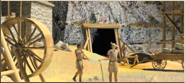

RTR: Imperium Surrectum
RTR: Imperium SurrectumTin Industry
A single-level building: there is nothing to upgrade it into.
Tin Exports (Special exports)

Where tin flows like the river of wealth, powering your nation’s glory.
The region is now a proud supplier of tin, the lifeblood of all things bronze.
From the modest tools that fix your roof to the gleaming armours that protect your soldiers, this tin is in high demand.
Armouries, workshops, and even luxury markets depend on this supply, ensuring that bronze is always in fashion, and that the region continues to cash in on the metal frenzy.
| Cost | 16,000 denarii | Build time | 10 turns | Minimum settlement | city |
Requirements — all of these must hold before this level can be built.
- any faction
- Local Market at Local Market or above is built here
- the region does not have the hidden resource
nobuild(nobuilding) - anywhere in your empire does not have the hidden resource
tin_supply_built(not_tin_supply_built) - Direct Rule or Homeland
- no building tagged
metalsis built or queued here (no_other_metals) - the region has the tin resource and Mines (Industry) at Deep Mining Complex (Industry) or above is built here (
tin_exports_mine) — or — the region has the hidden resourcetin_trade_centreand Trade Port at Shipwright or above is built here (tin_exports_locations)
Show the condition as the game files write it
factions { all, } and building_present_min_level market market and nobuilding and not_tin_supply_built and direct_govs and no_other_metals and tin_exports_mine or tin_exports_locations
What it does
- +2 trade income
- (Faction) Metalworkers gain a trade bonus, this bonus is further increased if copper is also available (locally or supplied)
Show 21 effects that apply only in the circumstances shown
- -2 public order (happiness) — only when
not hidden_resource tin_trade_centre - -1 population growth — only when
not hidden_resource tin_trade_centre - mine resource +5 — only when
not no_other_government and is_player and not hidden_resource tin_trade_centre - Mining income from coal: +50 per turn — only when
resource coal and hidden_resource qty_coal_2 and not no_other_government and is_player and not hidden_resource tin_trade_centre - Mining income from copper: +50 per turn — only when
resource copper and hidden_resource qty_copper_1 and not no_other_government and is_player and not hidden_resource tin_trade_centre - Mining income from copper: +100 per turn — only when
resource copper and hidden_resource qty_copper_2 and not no_other_government and is_player and not hidden_resource tin_trade_centre - Mining income from copper: +150 per turn — only when
resource copper and hidden_resource qty_copper_3 and not no_other_government and is_player and not hidden_resource tin_trade_centre - Mining income from gold: +75 per turn — only when
resource gold and hidden_resource qty_gold_1 and not no_other_government and is_player and not hidden_resource tin_trade_centre - Mining income from gold: +150 per turn — only when
resource gold and hidden_resource qty_gold_2 and not no_other_government and is_player and not hidden_resource tin_trade_centre - Mining income from gold: +225 per turn — only when
resource gold and hidden_resource qty_gold_3 and not no_other_government and is_player and not hidden_resource tin_trade_centre - Mining income from iron: +25 per turn — only when
resource iron and hidden_resource qty_iron_1 and not no_other_government and is_player and not hidden_resource tin_trade_centre - Mining income from iron: +50 per turn — only when
resource iron and hidden_resource qty_iron_2 and not no_other_government and is_player and not hidden_resource tin_trade_centre - Mining income from iron: +75 per turn — only when
resource iron and hidden_resource qty_iron_3 and not no_other_government and is_player and not hidden_resource tin_trade_centre - Mining income from lead: +25 per turn — only when
resource lead and hidden_resource qty_lead_1 and not no_other_government and is_player and not hidden_resource tin_trade_centre - Mining income from lead: +50 per turn — only when
resource lead and hidden_resource qty_lead_2 and not no_other_government and is_player and not hidden_resource tin_trade_centre - Mining income from silver: +75 per turn — only when
resource silver and hidden_resource qty_silver_1 and not no_other_government and is_player and not hidden_resource tin_trade_centre - Mining income from silver: +150 per turn — only when
resource silver and hidden_resource qty_silver_2 and not no_other_government and is_player and not hidden_resource tin_trade_centre - Mining income from tin: +50 per turn — only when
resource tin and hidden_resource qty_tin_1 and not no_other_government and is_player and not hidden_resource tin_trade_centre - Mining income from tin: +100 per turn — only when
resource tin and hidden_resource qty_tin_2 and not no_other_government and is_player and not hidden_resource tin_trade_centre - Mining income from tin: +150 per turn — only when
resource tin and hidden_resource qty_tin_3 and not no_other_government and is_player and not hidden_resource tin_trade_centre - Mining income from tin: +250 per turn — only when
resource tin and hidden_resource qty_tin_5 and not no_other_government and is_player and not hidden_resource tin_trade_centre
What the shorthands in those conditions stand for (7)
| Shorthand | Stands for | Shorthand | Stands for | Shorthand | Stands for | Shorthand | Stands for |
|---|---|---|---|---|---|---|---|
direct_govs | building_present governmentC or building_present governmentD | no_other_government | no_building_tagged government queued | no_other_metals | no_building_tagged metals queued | nobuilding | not hidden_resource nobuild |
not_tin_supply_built | not hidden_resource tin_supply_built factionwide | tin_exports_locations | hidden_resource tin_trade_centre and building_present_min_level port_buildings shipwright | tin_exports_mine | resource tin and building_present_min_level mines mines+1 |